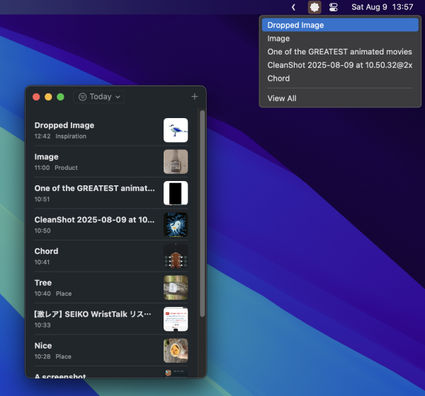
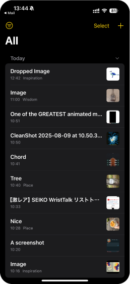
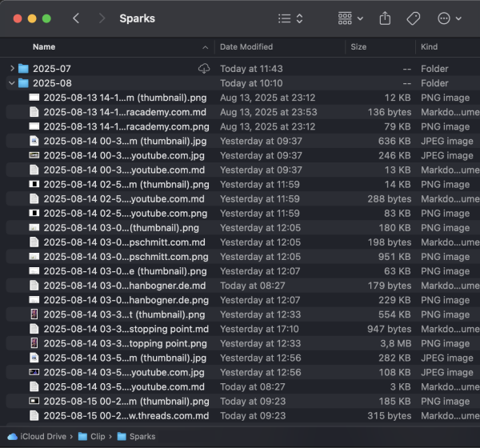
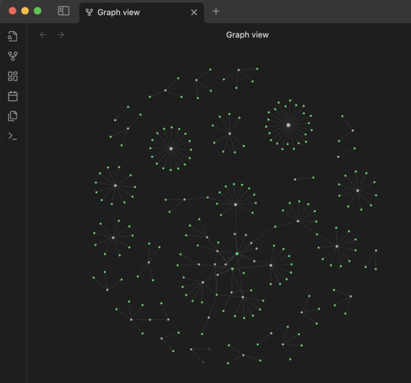

Capture in a second
Drop links, text, images, screenshots, videos, website to collect them.
Tags and content is extracted automatically. It's all build using native frameworks on iOS and macOS. Deep integrations. Local and fast.


It's your data
You own your data. You are in full control.
Everything is stored in a simple folder as markdown files. Access it, change it, move it around as you wish.
iCloud is used seamlessly sync across your Apple devices. No sign up.

Obsidian, LLMs...
Open what you captured in Obsidian to view it as a graph.
Reflect on it using ChatGPT.
Take your data to places. Built on it, build with it. Move it. No silos.
